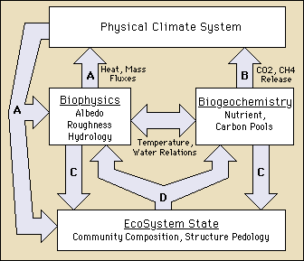

The BOREAS Information System
The BOREAS Information System
Introduction to BOREAS
The Boreal Ecosystems Atmosphere Study (BOREAS) is a large scale, international investigation focused on improving our understanding of the exchanges of radiative energy, sensible heat, water, CO2 and trace gases between the boreal forest and the lower atmosphere. A primary objective of BOREAS is to collect the data needed to improve computer simulation models of the important processes controlling these exchanges so that scientists can anticipate the effects of global change, principally altered temperature and precipitation patterns, on the biome.
The scientific issues at stake are as follows:
- Sensitivity of the boreal forest biome to changes in the physical climate system.
A number of simulation studies have been carried out to assess the climatic impact of increasing atmospheric CO2 [see the reviews of Schlesinger and Mitchell (1987) and Harrington (1987)]. Many of these studies indicate that the greatest warming engendered by increasing CO2 will occur at higher (45 to 65 degrees N) latitudes with the most marked effects within the continental interiors; for example, the doubled-CO2 experiment of Mitchell (1983) produced differences of 3K to 10K in the mean winter surface temperature for much of the land surface area of this zone. Other studies have indicated that there may be significant warming and drying in the summer months in the same region. Studies by Davis and Botkin (1985) and Solomon and Webb (1985) suggest that this warming and drying could modify the composition and functioning of the boreal forest, see Figure 1.
Figure 1: Interactions Between the Boreal Forest and the Atmosphere

(A) Influence of changes in the Physical Climate System on biophysical processes. These may feedback to the atmosphere through changes in energy, heat, water and CO2 exchange.
(B) Changes in nutrient cycling rates; release of CO2 and CH4 from the soil carbon pool back to the atmosphere.
(C) Changes in biogeochemical processes and water and nutrient availability influence community composition and structure.
(D) Change in species composition results in changes in surface biophysical characteristics and biogeochemical process rates.
- The carbon cycle and biogeochemistry in the boreal forest
. The study of Tans et al. (1990) presents evidence for the existence of a large terrestrial sink for fossil fuel carbon in the midlatitudes of the Northern Hemisphere. The exact mechanisms involved and the spatial contributions to this sink are as yet unknown, but the implication is that carbon is being stored in either living tissue or in the soil. However, any sustained increase in surface temperature, combined with changes in soil moisture, could result in changes in the cycling of nutrients in the soils with associated releases of CO2, CH4 and other trace gases from the surface. If this occurs on a large enough spatial scale, the oxidative capacity of the lower atmosphere could be significantly altered. Additionally, changes in the temperature and moisture regime could alter the biomes' exposure and response to discontinuous disturbance, i.e. fire frequency, which could substantially affect the carbon cycle within the biome. As yet, we do not know enough about the processes which control the carbon cycle to be able to predict or even to simulate the carbon source/sink dynamics within the region.
- Biophysical feedbacks on the physical climate system
. Research work has indicated (See item 1 above) that changes in the ecological functioning of the biome could be brought about by changes in the physical climate system. It is anticipated that these may be accompanied by alterations in the biophysical characteristics of the surface; namely albedo, surface roughness and the biophysical control of evapotranspiration (surface and internal resistance). Any changes in these may have feedback effects on the near-surface climatology (temperature, humidity, precipitation and cloudiness fields), see Sato et al. (1989).
These scientific issues provided the motivation for the design and execution of a cooperative field experiment involving elements of land surface climatology, biogeochemistry and terrestrial ecology with remote sensing playing a strong integrating role. A coordinated multidisciplinary approach to the design of BOREAS was adopted from the outset to ensure the maximum benefit from each discipline's participation.
Read other documents:
E-Mail a comment on this page to the curator 
Return to the BOREAS Home Page
Last Updated: April 22, 1997